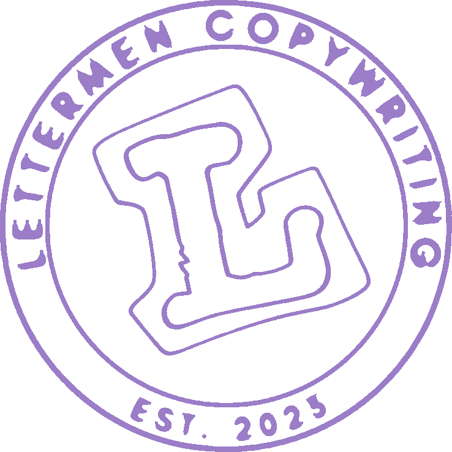
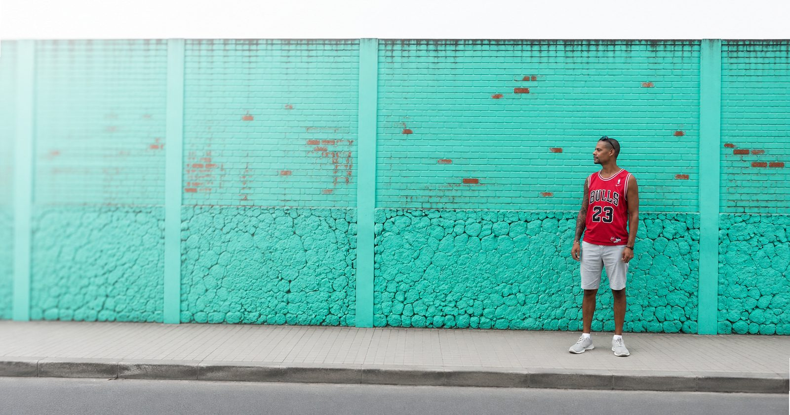

Website-Texte & E-Mail-Marketing
Du hast eine Website und schreibst Newsletter. Deine Kunden haben Fragen. Keins von beidem beantwortet sie.
Für Coaches, Handwerksbetriebe und Dienstleister, die aufhören wollen, wie ihre Konkurrenz zu klingen.
Was ist Copywriting?
Vielleicht hast du heute Morgen auf „Jetzt kaufen" geklickt. Eine E-Mail geöffnet – oder weggewischt, auch schlechtes Copywriting ist Copywriting.
An einem Plakat vorbeigegangen. Ein Produkt bei Amazon bestellt, ohne lange zu überlegen. Einen LinkedIn-Beitrag zu Ende gelesen.
Oder dich gefragt, warum ausgerechnet diese Zahnpasta in deinem Einkaufswagen liegt. Du hast doch nicht recherchiert. Niemand recherchiert Zahnpasta. Und trotzdem.
„Ja, sogar dieser Button, auf den du gleich klicken wirst, wurde für dich geschrieben.“
Das war kein Zufall. Das war Copywriting.
Copywriting steckt überall dort, wo Worte etwas bewirken sollen. Zum Beispiel hier:
Das Verrückte?
Ob bewusst oder nebenbei. Mit Absicht oder aus Zeitdruck. Mit dem Baukasten oder frei aus dem Kopf:
Sobald Worte eine Entscheidung beeinflussen sollen, ist es Copywriting.
Unsere Aufgabe ist deshalb viel einfacher. Und gleichzeitig viel schwieriger.
Sie sorgt dafür, dass Menschen schneller verstehen, neugierig werden und Vertrauen aufbauen. Sie beantwortet Fragen, bevor sie gestellt werden, räumt Zweifel aus dem Weg und macht dadurch – tada – Entscheidungen leichter.
Du hast nicht das Gefühl, überzeugt worden zu sein. Du hast einfach das Gefühl: „Ja, ergibt Sinn, das will ich."
Trotzdem lesen sich erstaunlich viele Websites, Newsletter und Werbeanzeigen, als hätte sie dieselbe Person geschrieben.
Warum eigentlich?
Das Problem
Du liest gerade zum dritten Mal heute „Wir stehen für Qualität, Zuverlässigkeit und persönliche Beratung."
Einmal bei deinem Konkurrenten. Einmal bei dessen Konkurrenten. Und – jetzt auch bei dir.
Fehlt nur noch der Stockfoto-Handschlag auf der Startseite und das Herz-Emoji im Newsletter-Betreff. Ach so, habt ihr beides.
Irgendwo sitzt gerade eine KI und verteilt denselben Satz an Unternehmen in ganz Deutschland.
Für sie seid ihr alle einfach nur: „Branche X. Website oder Newsletter. Bitte Text." Wir finden das ehrlich gesagt wahnsinnig romantisch.
Fremde Unternehmen, verbunden durch denselben Nebensatz.
Denn am Ende führen erstaunlich viele Wege zum gleichen Ergebnis:
Vorgefertigte Textbausteine, die schon in tausend anderen Branchenseiten stecken.
Der kleine Bruder vom Baukasten. Trainiert mit tausend Seiten, mixt er freundlicherweise den Durchschnitt aus allen.
Wir lieben den Neffen. Er „kennt sich damit aus" und hat sich beim Formulieren bei der Konkurrenz „inspiriert".
Ein paar Tausend Euro fürs Design, den Text hast du selbst „noch schnell geliefert" – zwischen zwei Kundenterminen.
Und falls du selbst bei ChatGPT „schreib mir n Über-uns-Text" oder „schreib mir n Newsletter" eingetippt hast, dann bist du direkt zur Quelle gegangen. Ehrgeizig von dir.
Wer nie gelernt hat, dass gutes Texten mehr ist, als Wörter in der richtigen Reihenfolge hinzustellen, für den sieht so ein Text bereits fertig aus.
Und deine Leserin? Die liest das, findet's ok, weil ja nichts falsch daran ist – ihr SEID zuverlässig, ihr SEID qualitativ – aber schließt den Tab. Oder archiviert die Mail. Kommt aufs Gleiche raus.
Sie hat einfach keine Lust, zum dritten Mal denselben Satz zu lesen.
Die gute Nachricht: Dein Angebot ist wahrscheinlich völlig in Ordnung. Die schlechte Nachricht für jeden KI-Generator da draußen: Genau das lässt sich reparieren. Nur eben nicht von ihm.
Und dann?
Ein austauschbarer Text kostet erstmal nichts.
Das ist ja gerade das Verlockende am Baukasten bzw. der KI. Die Rechnung kommt trotzdem, nur später und über einen Umweg.
Dein Leser versteht den Unterschied zur Konkurrenz nicht, weil deine Texte ihm keinen liefern. Also entscheidet er über das Einzige, was ihm übrig bleibt: den Preis.
Plötzlich sitzt du im Verkaufsgespräch und verteidigst zwölf Jahre Erfahrung gegen jemanden, der zweihundert Euro günstiger ist und zufällig dieselben drei Sätze benutzt wie du.
Manche Leser merken es sogar.
Und sobald jemand auch nur ahnt, dass da eine Maschine am Werk war, ist er raus – egal wie fehlerfrei der Text sonst ist.
Die Lösung
Dein Fachwissen, deine internen Abläufe und die halbfertigen Sätze, die du dir selbst im Kopf zurechtlegst, wenn dich jemand fragt, was du eigentlich machst:
Das nehmen wir und bauen daraus einen Text, dem ein Fremder ohne Vorwissen folgen kann.
Am Ende versteht dein Besucher in den ersten Sekunden, was du anbietest, wen genau du meinst, warum ausgerechnet dich und was als Nächstes zu tun ist.
Ohne dass du ihm hinterher noch am Telefon erklärst, was eigentlich deine Texte schon hätten übernehmen sollen.
Er sieht das Ganze – Design, Text, Usability – nicht nur Teile davon. Ich sehe meine eigene Website heute anders. Nach unserem Gespräch bin ich hochmotiviert, meine Seite zu optimieren und sehr gespannt, wie sich das auswirkt. Ich habe vollstes Vertrauen in seine Arbeit.
Was sich verändert
Du wiederholst dich am Telefon nicht mehr wie eine kaputte Schallplatte. Wer sich meldet, hat schon vorher verstanden, was du machst.
Niemand diskutiert mehr über deinen Preis, nur weil du 200 € teurer bist als dein Billig-Konkurrent. Deine potentiellen Kunden verstehen jetzt, warum du deinen Preis wert bist.
Leads, die nie gekauft haben. Kunden, die zufrieden waren und dann nie wieder von dir gehört haben. Ab jetzt regelmäßig – bei beiden, automatisch.
Läuft bei dir bisher alles über Mundpropaganda? Kann man machen, bis die mal drei Monate Pause macht. Deine Website und deine Mails übernehmen jetzt, was bisher nur dein Ruf konnte.
Du schreibst nicht mehr um elf abends an deinem nächsten Newsletter, zwischen Zähneputzen und Wecker stellen. Dafür hat nach Feierabend einfach keiner Zeit.
Dein letzter Kunde war zufrieden. Wann hast du ihm zuletzt geschrieben? Eben. Zufriedenheit hält sich nicht von allein warm.

Kein Stockfoto
Der Zufall hatte an dem Tag einfach ziemlich guten Geschmack.
Leistungen
Deine Website erklärt viel und führt trotzdem nirgendwo hin. Wir bauen aus verstreuten Informationen, Angebotsblättern und halbfertigen Gedanken in deinem Kopf einen roten Faden, dem ein Fremder von der ersten bis zur letzten Zeile folgt, bis zur Anfrage.
Ergebnis: eine Seite, die für dich arbeitet, auch wenn du gerade auf der Baustelle, im Kundentermin oder im Urlaub bist.
Mehr zu Website-Texten →Die meisten Newsletter sterben einen traurigen Tod.
Ungelesen. Zwischen einer DHL-Benachrichtigung und 20 Prozent Rabatt auf Gartenmöbel (Warum ist es immer das Gartencenter? Ich war noch nie in meinem Leben in einem und krieg trotzdem drei Mails die Woche). Wir schreiben E-Mails, die neugierig machen, gelesen werden und einen Grund liefern, bis zum letzten Satz dranzubleiben.
Ergebnis: ein Newsletter, auf den sich deine Kunden freuen, statt ihn reflexartig zu löschen.
Mehr zu E-Mail-Marketing →Mein Aha-Moment war, zu verstehen, dass die Kunden das Endergebnis als Erstes sehen wollen. Wie es entsteht, kommt erst danach. Was mich von Anfang an überzeugt hat, war der konsequente Fokus darauf, wie meine Kunden die Seite erleben, nicht wie ich sie sehe. Das macht den Unterschied.
Vom Erstgespräch bis zum fertigen Newsletter habe ich mich super wohl gefühlt. Er hat mir tiefere Einblicke in die Bedürfnisse meiner Zielgruppe gegeben und mich mit seinen Fragen zum Nachdenken gebracht. Seine Arbeit ist absolut empfehlenswert.
Warum Lettermen
Wir sind Susan und Bakari. Copywriter mit einer Schwäche für klare Worte, einer chronischen Allergie gegen hohle Phrasen und einer latenten Überempfindlichkeit gegenüber Formulierungen wie „aufs nächste Level bringen".
Und einer tiefen Überzeugung: Ein guter Text muss sich nicht mit Fremdwörtern schmücken, um klug zu wirken und Kompetenz zu zeigen. Er muss verstanden werden.
Was wir machen?
Wir nehmen dein Wissen, dein Business – und manchmal auch dein etwas verfranstes Selbstmarketing – und bauen daraus eine Botschaft:
Die verkauft, ohne sich anzubiedern. Die wirkt, weil sie ehrlich ist. Die zeigt, wer du wirklich bist. Nicht, wer du laut Social-Media-Algorithmus sein solltest.
Wir streichen alles, was nach „dein volles Potenzial entfalten" oder „authentisch sichtbar werden" klingt, und ersetzen es durch Worte, die deine Zielgruppe fühlt, weil sie sich darin erkennt.
Prozess
Wir gucken uns deine Website an, deine Mails, dein Angebot, deine Ziele. Dabei finden wir raus, wo's hakt, und ob wir die Richtigen für dein Projekt sind.
Wir klären, was du dir wünschst: deine Erwartungen, deine Ziele. Dann bauen wir ein Angebot, das genau zu DIR passt. Nicht zu „Kunden wie dir".
Jetzt lernen wir dein Unternehmen wirklich kennen. Wir fragen, wir hören zu, bis wir kapieren, was deine Kunden verstehen müssen, und was sie davon abhält, dich anzuschreiben.
Jetzt bekommt jede Erkenntnis ihren Platz. Wir schreiben, streichen und feilen, bis ein roter Faden entsteht. Keine Wörter, die sich nur wichtig anhören.
Du liest in Ruhe, gibst Feedback, wir feilen nach, meist der schnellste Teil. Dann kriegst du die fertigen Texte. Fertig zum Live-gehen.
FAQ
Klar, kannst du. Die Frage ist eher, ob du die Zeit und den Abstand dazu hast. Die meisten unserer Kunden können ihr eigenes Angebot im Schlaf erklären, und genau das macht es so schwer, es für einen Fremden aufzuschreiben. Man steckt zu tief drin.
ChatGPT kann einen Text produzieren. Es kennt nur nicht deine Kunden, ihre tatsächlichen Einwände, den Unterschied zu deinen drei größten Mitbewerbern oder den einen Satz, der bei dir schon zehnmal zum Abschluss geführt hat. Das macht am Ende den Unterschied, nicht das Werkzeug, mit dem ein erster Entwurf entsteht.
Du beantwortest unsere Fragen ehrlich, den Rest übernehmen wir. Ein ausformuliertes Briefing brauchen wir nicht, die Fragen dafür stellen wir selbst.
Beides. Ein guter Satz an der falschen Stelle bringt niemandem etwas. Wir legen vorher fest, was jeder Abschnitt deiner Seite leisten muss, dann erst schreiben wir.
Dann sagst du das, und wir überarbeiten. Eine Feedbackrunde ist immer eingeplant, kein Extra.
Für Coaches, Handwerksbetriebe, Beraterinnen und ziemlich jeden Dienstleister dazwischen. Uns interessiert weniger deine Branche als die Frage, wie deine Kunden tatsächlich sprechen und was sie zögern lässt.
Kommt auf den Umfang an. Eine Landingpage ist etwas anderes als eine komplette Website mit E-Mail-Strecke. Im Erstgespräch bekommst du ein konkretes Angebot, keine Tabelle voller Sternchen.
Ja. Manchmal ist genau das der richtige erste Schritt, um zu sehen, wie sich die Zusammenarbeit anfühlt, bevor gleich die ganze Website drankommt.
Jetzt loslegen
Ein Erstgespräch, 30 Minuten, kein Verkaufsdruck. Am Ende weißt du, woran's liegt – ob wir danach zusammenarbeiten oder nicht.